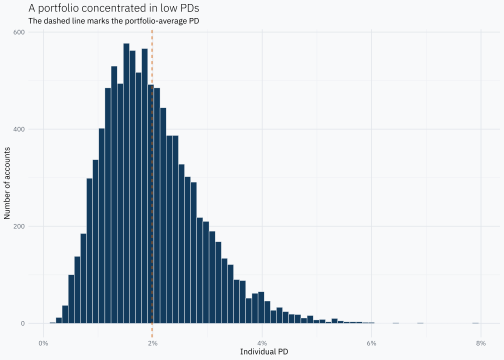
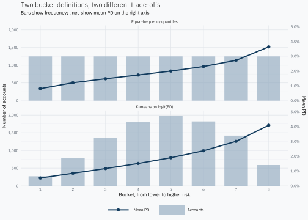
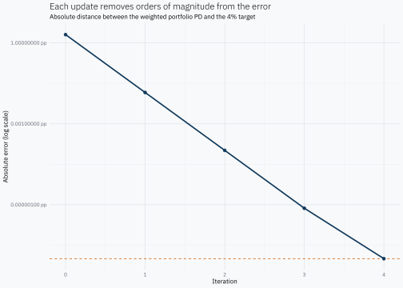
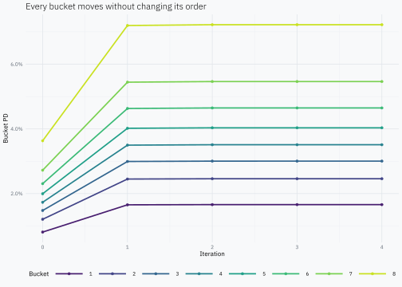
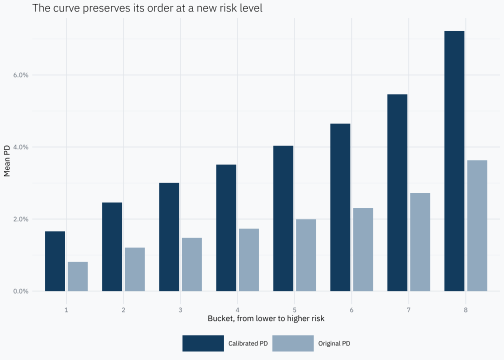

# A tibble: 3 × 3
bucket_count smallest_bucket largest_bucket
<int> <dbl> <dbl>
1 5 2000 2000
2 8 1250 1250
3 10 1000 1000An individual PD summarizes the estimated probability that an account will default over a defined horizon. A portfolio, however, contains thousands of accounts, a distribution of PDs and sometimes a top-down view that requires its average risk to change. How can that new aggregate level be distributed across risk grades without simply multiplying every PD by the same constant?
This post develops a teaching example of the Bayesian Scalar Approach (BSA). It does not reproduce a particular bank implementation or prescribe an IFRS 9 methodology. IFRS 9 requires relevant forward-looking information to be incorporated into expected credit losses; BSA is one possible technique for mapping a projected portfolio-average PD onto a PD scale.
The central idea is to preserve the relative odds of the risk buckets while changing the portfolio base rate. We will simulate individual PDs, summarize them into ordered buckets and then impose a target average PD.
NoteThis pattern is not only about banking
The name Bayesian Scalar Approach belongs mainly to PD calibration, but its underlying logic appears in many binary prediction problems. In medical diagnosis, a test’s likelihood ratio is combined with the prevalence of a disease to move from pre-test to post-test odds. In machine learning, label shift describes a related setting: the prevalence of the positive class changes between training and deployment while the feature distribution within each class is assumed to remain stable.
The same idea can arise in fraud detection, insurance, churn and direct marketing. A model may still rank cases well even though the event’s overall frequency has changed. The probabilities then need a base-rate adjustment. Those fields do not usually call the procedure BSA, but the intuition is the same: preserve relative evidence while updating the background prevalence.
A simulated portfolio
We simulate 10,000 accounts. A Beta distribution represents a portfolio with many low PDs and a tail toward higher risk. Its parameters imply a theoretical mean close to 2%.
library(dplyr)
library(ggplot2)
library(scales)
library(tibble)
library(tidyr)
set.seed(20260925)
n_accounts <- 10000L
# alpha / (alpha + beta) = 2%, before sampling variation.
portfolio <- tibble(
account_id = seq_len(n_accounts),
pd = rbeta(n_accounts, shape1 = 5, shape2 = 245)
)
portfolio_summary <- portfolio |>
summarise(
accounts = n(),
mean_pd = mean(pd),
median_pd = median(pd),
p05 = quantile(pd, 0.05),
p95 = quantile(pd, 0.95)
)
portfolio_summary |>
mutate(
accounts = comma(accounts, accuracy = 1),
across(-accounts, ~ percent(.x, accuracy = 0.01))
) |>
knitr::kable(
align = rep("r", 5),
col.names = c("Accounts", "Mean", "Median", "P05", "P95"),
caption = "Distribution of simulated individual PDs"
)| Accounts | Mean | Median | P05 | P95 |
|---|---|---|---|---|
| 10,000 | 1.99% | 1.86% | 0.80% | 3.60% |
The mean is central to the calibration, but it does not describe the portfolio on its own. The median locates a typical account, while P05 and P95 provide a compact view of the distribution’s central range. The histogram shows its shape and upper tail more clearly than additional summary columns would.
Show chart code
ggplot(portfolio, aes(pd)) +
geom_histogram(bins = 70, colour = "white", linewidth = 0.15) +
geom_vline(
xintercept = mean(portfolio$pd),
linetype = "dashed",
colour = "#D55E00"
) +
scale_x_continuous(labels = label_percent(accuracy = 1)) +
labs(
title = "A portfolio concentrated in low PDs",
subtitle = "The dashed line marks the portfolio-average PD",
x = "Individual PD",
y = "Number of accounts"
)
This skewed shape makes a grouped risk scale useful. Buckets do not replace the individual PDs; they provide a lower-resolution representation that is easier to explain and sometimes easier to operate.
From individual PDs to risk buckets
Our main method is rank bucketing: sort accounts by PD and split them into groups of approximately equal size. This is transparent and preserves the model’s risk ordering. There is no universally optimal number of buckets. The choice balances interpretability, sufficient observations per bucket, monotonicity, within-bucket homogeneity, separation and information loss.
The next table compares five, eight and ten buckets. We will continue with eight: enough to expose heterogeneity without making the scale unnecessarily fine.
As a secondary exploration, kmeans() can be applied to qlogis(pd) rather than to raw PD. This is sometimes loosely described as a linearization, but the more precise reason here is geometric. The logit maps probabilities from the bounded interval \((0,1)\) to log-odds on the entire real line:
\[ \operatorname{logit}(p)=\log\left(\frac{p}{1-p}\right). \]
Euclidean distances between raw PDs give the upper tail much more room than the dense low-PD region. On the logit scale, differences are measured as differences in log-odds, which spreads small probabilities and is also the scale on which BSA acts as an additive shift. This makes logit a coherent choice for this comparison, not a requirement of either k-means or BSA. K-means can produce more homogeneous groups on that scale, but its cluster sizes need not be similar and its solution depends on the clustering fit.
# Trim only the numerical extremes so the logit remains finite.
portfolio_kmeans <- portfolio |>
mutate(logit_pd = qlogis(pmin(pmax(pd, 1e-6), 1 - 1e-6)))
kmeans_logit <- kmeans(portfolio_kmeans$logit_pd, centers = 8, nstart = 25)
# Translate arbitrary cluster IDs into an increasing risk order.
kmeans_order <- order(kmeans_logit$centers[, 1])
portfolio_kmeans <- portfolio_kmeans |>
mutate(
kmeans_bucket = match(kmeans_logit$cluster, kmeans_order),
kmeans_bucket = factor(kmeans_bucket, levels = seq_len(8L))
)
kmeans_summary <- portfolio_kmeans |>
summarise(
accounts = n(),
weight = n() / n_accounts,
mean_pd = mean(pd),
.by = kmeans_bucket
) |>
arrange(mean_pd)
kmeans_summary |>
mutate(
weight = percent(weight, accuracy = 0.1),
mean_pd = percent(mean_pd, accuracy = 0.01)
) |>
knitr::kable(
align = c("c", "r", "r", "r"),
col.names = c("Bucket", "Accounts", "Portfolio share", "Mean PD"),
caption = "K-means buckets ordered by mean PD"
)| Bucket | Accounts | Portfolio share | Mean PD |
|---|---|---|---|
| 1 | 271 | 2.7% | 0.53% |
| 2 | 781 | 7.8% | 0.85% |
| 3 | 1349 | 13.5% | 1.17% |
| 4 | 1803 | 18.0% | 1.51% |
| 5 | 1969 | 19.7% | 1.90% |
| 6 | 1820 | 18.2% | 2.37% |
| 7 | 1418 | 14.2% | 3.01% |
| 8 | 589 | 5.9% | 4.09% |
Eight buckets ordered by risk
bucket_count <- 8L
portfolio_bucketed <- portfolio |>
arrange(pd) |>
mutate(bucket = ntile(pd, bucket_count))
bucket_summary <- portfolio_bucketed |>
summarise(
accounts = n(),
weight = n() / n_accounts,
pd_original = mean(pd),
pd_min = min(pd),
pd_max = max(pd),
contribution_original = weight * pd_original,
.by = bucket
) |>
mutate(bucket = factor(bucket, levels = seq_len(bucket_count)))
bucket_summary# A tibble: 8 × 7
bucket accounts weight pd_original pd_min pd_max contribution_original
<fct> <int> <dbl> <dbl> <dbl> <dbl> <dbl>
1 1 1250 0.125 0.00811 0.00173 0.0105 0.00101
2 2 1250 0.125 0.0121 0.0105 0.0135 0.00151
3 3 1250 0.125 0.0148 0.0135 0.0161 0.00185
4 4 1250 0.125 0.0173 0.0161 0.0186 0.00216
5 5 1250 0.125 0.0200 0.0186 0.0214 0.00249
6 6 1250 0.125 0.0231 0.0214 0.0249 0.00288
7 7 1250 0.125 0.0272 0.0249 0.0301 0.00340
8 8 1250 0.125 0.0363 0.0301 0.0790 0.00454portfolio_pd_original <- weighted.mean(
bucket_summary$pd_original,
bucket_summary$weight
)
portfolio_pd_original[1] 0.01985756The final check implements
\[ \bar p = \sum_b w_b p_b, \]
where \(w_b\) is the bucket weight and \(p_b\) its mean PD. Replacing each account’s PD with its bucket mean discards within-bucket detail, but preserves the portfolio weighted mean.
Comparing equal-frequency and k-means buckets
A common scorecard diagnostic uses bars for bucket frequency and a line for the event rate or mean PD. Those are different quantities, so the chart gives each one an explicit axis. The conversion factor below only aligns the graphics; it does not transform the data used anywhere else.
The upper panel uses equal-frequency quantiles, so its bars are almost flat by construction. K-means instead minimizes within-cluster variation on the logit scale. Its groups can be more compact, but their portfolio shares can differ substantially. In both panels the rising line is the risk gradient: buckets are displayed from lower to higher mean PD.
Show comparison preparation
# Build comparable summaries from the two account-level assignments.
bucket_method_profile <- bind_rows(
portfolio_bucketed |>
transmute(
method = "Equal-frequency quantiles",
bucket = as.integer(bucket),
pd,
logit_pd = qlogis(pmin(pmax(pd, 1e-6), 1 - 1e-6))
),
portfolio_kmeans |>
transmute(
method = "K-means on logit(PD)",
bucket = as.integer(kmeans_bucket),
pd,
logit_pd
)
) |>
summarise(
accounts = n(),
weight = n() / n_accounts,
mean_pd = mean(pd),
sd_logit_pd = sd(logit_pd),
.by = c(method, bucket)
) |>
arrange(method, bucket)
bucket_method_diagnostics <- bucket_method_profile |>
summarise(
smallest_bucket_share = min(weight),
largest_bucket_share = max(weight),
weighted_within_bucket_sd = weighted.mean(sd_logit_pd, accounts),
smallest_adjacent_pd_gap = min(diff(mean_pd)),
.by = method
)
bucket_method_diagnostics |>
mutate(
across(ends_with("share"), ~ percent(.x, accuracy = 0.1)),
weighted_within_bucket_sd = number(
weighted_within_bucket_sd,
accuracy = 0.001
),
smallest_adjacent_pd_gap = percent(
smallest_adjacent_pd_gap,
accuracy = 0.01
)
) |>
knitr::kable(
align = c("l", "r", "r", "r", "r"),
col.names = c(
"Method", "Smallest share", "Largest share",
"Within-bucket logit SD", "Smallest adjacent PD gap"
),
caption = "Balance, homogeneity and separation by bucketing method"
)| Method | Smallest share | Largest share | Within-bucket logit SD | Smallest adjacent PD gap |
|---|---|---|---|---|
| Equal-frequency quantiles | 12.5% | 12.5% | 0.091 | 0.25% |
| K-means on logit(PD) | 2.7% | 19.7% | 0.083 | 0.32% |
Show chart code
# Rescale PD only for drawing it against account counts on the left axis.
pd_to_accounts <- max(bucket_method_profile$accounts) /
(max(bucket_method_profile$mean_pd) * 1.15)
ggplot(bucket_method_profile, aes(factor(bucket))) +
geom_col(
aes(y = accounts, fill = "Accounts"),
width = 0.72,
alpha = 0.65
) +
geom_line(
aes(y = mean_pd * pd_to_accounts, colour = "Mean PD", group = 1),
linewidth = 0.9
) +
geom_point(
aes(y = mean_pd * pd_to_accounts, colour = "Mean PD"),
size = 2
) +
facet_wrap(vars(method), ncol = 1) +
scale_y_continuous(
name = "Number of accounts",
labels = label_comma(),
sec.axis = sec_axis(
transform = ~ . / pd_to_accounts,
name = "Mean PD",
labels = label_percent(accuracy = 0.1)
),
expand = expansion(mult = c(0, 0.08))
) +
scale_fill_manual(values = c("Accounts" = "#91A9BE")) +
scale_colour_manual(values = c("Mean PD" = "#123B5D")) +
labs(
title = "Two bucket definitions, two different trade-offs",
subtitle = "Bars show frequency; lines show mean PD on the right axis",
x = "Bucket, from lower to higher risk",
fill = NULL,
colour = NULL
)
The diagnostics make the trade-off explicit. A smaller within-bucket standard deviation means greater homogeneity on the scale that k-means actually optimizes. A larger adjacent PD gap means clearer local separation. Neither metric alone identifies a universally better partition: the quantile solution guarantees balanced support, while k-means is allowed to trade balance for compactness and separation.
A new portfolio risk level
Suppose an aggregate model, perhaps one relating portfolio defaults to macroeconomic variables, projects an average PD of 4%. This top-down model determines the new average level; we still need to distribute it across the risk buckets.
target_pd <- 0.04
tibble(
original_portfolio_pd = portfolio_pd_original,
target_portfolio_pd = target_pd
) |>
mutate(across(everything(), ~ percent(.x, accuracy = 0.01))) |>
knitr::kable(
align = c("r", "r"),
col.names = c("Original portfolio PD", "Target portfolio PD"),
caption = "Portfolio-level calibration target"
)| Original portfolio PD | Target portfolio PD |
|---|---|
| 1.99% | 4.00% |
Multiplying every PD by two is not an adequate general solution. It can produce values above 100% and treats a move from 1% in the same way as a move from 60%. BSA instead works with odds, where a change in the base rate has a natural interpretation.
Base risk, bucket information and odds
Consider a bucket with a 5% PD when the portfolio base PD is 2%. Its relative risk can be expressed as an odds ratio:
\[ \operatorname{odds}(D)=\frac{0.02}{0.98}=0.02041, \qquad \operatorname{odds}(D\mid B)=\frac{0.05}{0.95}=0.05263, \]
\[ LR_B= \frac{\operatorname{odds}(D\mid B)}{\operatorname{odds}(D)} =\frac{0.05263}{0.02041}=2.579. \]
Membership in this bucket multiplies the portfolio base odds of default by approximately 2.579. This is not an addition of probabilities: the bucket contributes relative information on the odds scale. That interpretation connects Bayes’ formula with PD-curve calibration and classification evidence.
If the base PD rises to 4%, its odds are \(0.04/0.96=0.04167\). Holding \(LR_B=2.579\) constant gives
\[ \operatorname{odds}^{new}(D\mid B)=2.579\times0.04167=0.10746, \]
and therefore
\[ P^{new}(D\mid B)=\frac{0.10746}{1+0.10746}\approx9.70\%. \]
The bucket moves from 5% to 9.70% while the portfolio base rate moves from 2% to 4%. Its relative position is preserved by construction:
\[ \frac{0.05/0.95}{0.02/0.98} \approx \frac{0.0970/0.9030}{0.04/0.96} \approx2.579. \]
The compact BSA formula
For bucket \(i\), let \(p_i\) be its original PD, \(\bar p\) the original portfolio mean and \(c\) the target portfolio mean. The original curve gives us the bucket odds relative to the portfolio odds. BSA preserves that ratio after replacing the original portfolio level \(\bar p\) with the target level \(c\):
\[ \frac{\operatorname{odds}(p_i)}{\operatorname{odds}(\bar p)} = \frac{\operatorname{odds}(p_i^{new})}{\operatorname{odds}(c)}. \]
Here \(\operatorname{odds}(p)=p/(1-p)\). Replacing each odds term by its probability expression gives
\[ \frac{ \frac{p_i}{1-p_i} }{ \frac{\bar p}{1-\bar p} } = \frac{ \frac{p_i^{new}}{1-p_i^{new}} }{ \frac{c}{1-c} }. \]
The left-hand side is the known quantity being preserved; the right-hand side is the constraint imposed on \(p_i^{new}\). Solving the probability expression for \(p_i^{new}\) gives the compact BSA formula:
\[ p_i^{new}= \frac{ p_i\frac{c}{\bar p} }{ p_i\frac{c}{\bar p} + (1-p_i)\frac{1-c}{1-\bar p} }. \]
This is a base-rate update, not Bayesian parameter inference of the form prior \(\rightarrow\) likelihood \(\rightarrow\) posterior for an unknown \(\theta\). GARP presents this form of BSA as a bounded alternative to proportional PD scaling.
# Move a PD from a base portfolio mean to a target mean on the odds scale.
bsa_update <- function(pd, base_pd, target_pd) {
numerator <- pd * target_pd / base_pd
denominator <- numerator + (1 - pd) * (1 - target_pd) / (1 - base_pd)
numerator / denominator
}Applying BSA to all buckets
One application moves the mean PD of each bucket from the current portfolio level toward the 4% target.
bucket_once <- bucket_summary |>
mutate(
pd_bsa_once = bsa_update(
pd_original,
base_pd = portfolio_pd_original,
target_pd = target_pd
)
)
portfolio_pd_once <- weighted.mean(
bucket_once$pd_bsa_once,
bucket_once$weight
)
tibble(
target_pd = target_pd,
portfolio_pd_after_one_update = portfolio_pd_once
) |>
mutate(across(everything(), ~ percent(.x, accuracy = 0.001))) |>
knitr::kable(
align = c("r", "r"),
col.names = c("Target PD", "Portfolio PD after one update"),
caption = "The first BSA update does not hit the aggregate target exactly"
)| Target PD | Portfolio PD after one update |
|---|---|
| 4.000% | 3.986% |
For a portfolio represented by bucket means, the weighted average after one application need not equal \(c\) exactly. The formula transforms each bucket PD; it does not impose the subsequent weighted average as an algebraic identity. This gap motivates separating the BSA update from the aggregate constraint.
Iterating to the aggregate constraint
At each step, the newly obtained weighted mean becomes the base rate and BSA moves the buckets toward the target again. This does not reuse the same Bayesian evidence. It is a numerical procedure that repeatedly uses a Bayes-based transformation until
\[ \left|\bar p^{(k)}-c\right|<\varepsilon. \]
The stopping rule is therefore defined on the portfolio mean, not directly on the movement of each bucket. Both ideas meet at the exact fixed point. Once \(\bar p^{(k)}=c\), the next BSA update uses the same value as its base and target, so its odds multiplier is 1 and every bucket remains unchanged:
\[ p_i^{(k+1)}=p_i^{(k)}. \]
With a numerical tolerance the buckets may still move by an immaterial amount, but reaching the aggregate target is the primary calibration objective.
# Repeat the update until the weighted mean reaches the target.
iterate_bsa <- function(pd, weights, target_pd, tolerance = 1e-10, max_iter = 100) {
current_pd <- pd
history <- tibble(
iteration = 0L,
portfolio_pd = weighted.mean(current_pd, weights),
bucket_pd = list(current_pd)
)
for (iteration in seq_len(max_iter)) {
current_mean <- weighted.mean(current_pd, weights)
if (abs(current_mean - target_pd) < tolerance) break
current_pd <- bsa_update(current_pd, current_mean, target_pd)
history <- bind_rows(
history,
tibble(
iteration = iteration,
portfolio_pd = weighted.mean(current_pd, weights),
bucket_pd = list(current_pd)
)
)
}
if (abs(weighted.mean(current_pd, weights) - target_pd) >= tolerance) {
stop("BSA did not reach the specified tolerance.", call. = FALSE)
}
history
}
bsa_history <- iterate_bsa(
pd = bucket_summary$pd_original,
weights = bucket_summary$weight,
target_pd = target_pd
)
bsa_history |>
select(iteration, portfolio_pd) |>
mutate(portfolio_pd = percent(portfolio_pd, accuracy = 0.0001)) |>
knitr::kable(
align = c("r", "r"),
col.names = c("Iteration", "Portfolio PD"),
caption = "Convergence of the weighted portfolio PD"
)| Iteration | Portfolio PD |
|---|---|
| 0 | 1.9858% |
| 1 | 3.9856% |
| 2 | 3.9999% |
| 3 | 4.0000% |
| 4 | 4.0000% |
NoteDoes the iteration always converge quickly?
For positive bucket weights, bucket PDs strictly between 0 and 1, and a target \(c\) strictly between 0 and 1, there is a unique common shift in log-odds whose weighted mean equals \(c\). The weighted mean is a continuous, strictly increasing function of that shift, so the calibration problem itself has a unique solution.
The fixed-point iteration used here converges monotonically under these interior conditions, but a small iteration count is not a universal guarantee. Very heterogeneous buckets or targets near 0 or 1 can slow it down. Production code should retain a tolerance and iteration cap; a one-dimensional root solver such as uniroot() is a robust alternative when convergence guarantees matter more than showing the step-by-step mechanism.
Show chart code
convergence_error <- bsa_history |>
mutate(
# Express the distance to target in percentage points.
error_pp = abs(portfolio_pd - target_pd) * 100,
# Values below tolerance share the same visual floor on the log scale.
error_pp = pmax(error_pp, 1e-8)
)
ggplot(convergence_error, aes(iteration, error_pp)) +
geom_hline(
yintercept = 1e-8,
linetype = "dashed",
colour = "#D55E00"
) +
geom_line(linewidth = 0.8) +
geom_point(size = 1.6) +
scale_y_log10(
labels = label_number(accuracy = 1e-8, suffix = " pp")
) +
labs(
title = "Each update removes orders of magnitude from the error",
subtitle = "Absolute distance between the weighted portfolio PD and the 4% target",
x = "Iteration",
y = "Absolute error (log scale)"
)
Risk ordering is preserved because every step is a strictly increasing transformation of the starting PD. Pairwise bucket odds ratios are also preserved: every bucket receives the same odds multiplier in each iteration.
Show chart code
ggplot(bucket_trajectories, aes(iteration, pd, colour = bucket)) +
geom_line(linewidth = 0.8) +
geom_point(size = 1.2) +
scale_colour_viridis_d(
option = "D",
begin = 0.08,
end = 0.92,
guide = guide_legend(nrow = 1)
) +
scale_y_continuous(labels = label_percent(accuracy = 0.1)) +
labs(
title = "Every bucket moves without changing its order",
x = "Iteration",
y = "Bucket PD",
colour = "Bucket"
)
The final calibration
# A tibble: 8 × 4
bucket weight pd_original pd_bsa_final
<fct> <dbl> <dbl> <dbl>
1 1 0.125 0.00811 0.0166
2 2 0.125 0.0121 0.0246
3 3 0.125 0.0148 0.0300
4 4 0.125 0.0173 0.0351
5 5 0.125 0.0200 0.0403
6 6 0.125 0.0231 0.0465
7 7 0.125 0.0272 0.0546
8 8 0.125 0.0363 0.0722tibble(
original_portfolio_pd = weighted.mean(
bucket_final$pd_original,
bucket_final$weight
),
calibrated_portfolio_pd = weighted.mean(
bucket_final$pd_bsa_final,
bucket_final$weight
),
target_portfolio_pd = target_pd,
risk_order_is_preserved = all(diff(bucket_final$pd_bsa_final) > 0)
)# A tibble: 1 × 4
original_portfolio_pd calibrated_portfolio_pd target_portfolio_pd
<dbl> <dbl> <dbl>
1 0.0199 0.0400 0.04
# ℹ 1 more variable: risk_order_is_preserved <lgl>Show chart code
bucket_final |>
pivot_longer(
cols = c(pd_original, pd_bsa_final),
names_to = "version",
values_to = "pd"
) |>
mutate(
version = recode(
version,
pd_original = "Original PD",
pd_bsa_final = "Calibrated PD"
)
) |>
ggplot(aes(bucket, pd, fill = version)) +
geom_col(position = position_dodge(width = 0.8), width = 0.7) +
scale_fill_manual(values = c(
"Original PD" = "#91A9BE",
"Calibrated PD" = "#123B5D"
)) +
scale_y_continuous(labels = label_percent(accuracy = 0.1)) +
labs(
title = "The curve preserves its order at a new risk level",
x = "Bucket, from lower to higher risk",
y = "Mean PD",
fill = NULL
)
Is the result unique?
There are two different questions. If BSA is applied to each individual PD, the result is essentially unique for given values of \(p_i\), \(\bar p\) and \(c\). If the portfolio is first represented by buckets, however, each account is approximated by a group mean. Changing that partition can change the assigned PD even when the final portfolio mean remains 4%.
The next comparison applies the same algorithm to five and eight buckets. This is a modelling consideration rather than a defect of the method: the bucketing choice should be documented and validated.
Show sensitivity calculation
# Summarize and calibrate equal-frequency partitions at different granularities.
calibrate_quantile_buckets <- function(portfolio, bucket_count, target_pd) {
buckets <- portfolio |>
arrange(pd) |>
mutate(bucket = ntile(pd, bucket_count)) |>
summarise(
weight = n() / nrow(portfolio),
pd_original = mean(pd),
.by = bucket
)
history <- iterate_bsa(
pd = buckets$pd_original,
weights = buckets$weight,
target_pd = target_pd
)
buckets |>
mutate(
scheme = paste(bucket_count, "buckets"),
pd_bsa_final = history$bucket_pd[[nrow(history)]],
iterations = max(history$iteration)
)
}
bucket_sensitivity <- bind_rows(
calibrate_quantile_buckets(portfolio, 5L, target_pd),
calibrate_quantile_buckets(portfolio, 8L, target_pd)
)
bucket_sensitivity# A tibble: 13 × 6
bucket weight pd_original scheme pd_bsa_final iterations
<int> <dbl> <dbl> <chr> <dbl> <int>
1 1 0.2 0.00938 5 buckets 0.0192 4
2 2 0.2 0.0145 5 buckets 0.0295 4
3 3 0.2 0.0186 5 buckets 0.0377 4
4 4 0.2 0.0235 5 buckets 0.0473 4
5 5 0.2 0.0333 5 buckets 0.0664 4
6 1 0.125 0.00811 8 buckets 0.0166 4
7 2 0.125 0.0121 8 buckets 0.0246 4
8 3 0.125 0.0148 8 buckets 0.0300 4
9 4 0.125 0.0173 8 buckets 0.0351 4
10 5 0.125 0.0200 8 buckets 0.0403 4
11 6 0.125 0.0231 8 buckets 0.0465 4
12 7 0.125 0.0272 8 buckets 0.0546 4
13 8 0.125 0.0363 8 buckets 0.0722 4Both schemes reach the same portfolio mean but produce different bucket PDs. They can therefore assign different PDs to the same account when the bucket mean is used as its representative value. More buckets reduce that approximation but also reduce observations per group and increase governance complexity.
Conclusion
BSA changes the absolute level of a PD curve while preserving its relative structure in odds. The example leaves four practical lessons:
- A target average PD comes from an aggregate layer distinct from risk ranking.
- Bayes enters by preserving relative bucket information while the base rate changes.
- Iteration is a numerical device for matching the aggregate mean when the portfolio is represented by buckets.
- Bucketing is a modelling decision: it can preserve the mean and ordering, but not all individual information.
A real application would also test the invariance assumptions, ranking stability, the quality of the top-down PD and sensitivity to granularity on out-of-sample data.
References
- Global Association of Risk Professionals (2022). A Review on the Probability of Default for IFRS 9 — presents the Bayesian Scalar Approach as a bounded alternative to proportional PD scaling.
- Wagner, H. and Bagaméry, F. (2013). Scorecard Development Beyond the Standard Textbook: A Case Study — a scorecard development and calibration case using quantiles and a central tendency.
- Tasche, D. (2013). The Art of Probability-of-Default Curve Calibration. Journal of Credit Risk, 9(4), 63–103 — a framework for PD-curve calibration, likelihood ratios, Bayes’ formula and rating profiles.
- OeKB Group (2026). IFRS 9 methodology disclosure — a public example of an institution reporting the use of BSA with forward-looking information.
- Merck Manual Professional Edition. Understanding Medical Tests and Test Results — the odds-and-likelihood-ratio form of Bayesian revision in medical diagnosis.
- Alexandari, A., Kundaje, A. and Shrikumar, A. (2020). Maximum Likelihood with Bias-Corrected Calibration Is Hard-To-Beat at Label Shift Adaptation. Proceedings of Machine Learning Research, 119, 222–232 — probability adaptation when class prevalence changes between training and deployment.
- Coussement, K. and Buckinx, W. (2011). A probability-mapping algorithm for calibrating the posterior probabilities: A direct marketing application. European Journal of Operational Research, 214(3), 732–738 — posterior-probability calibration for response modelling.